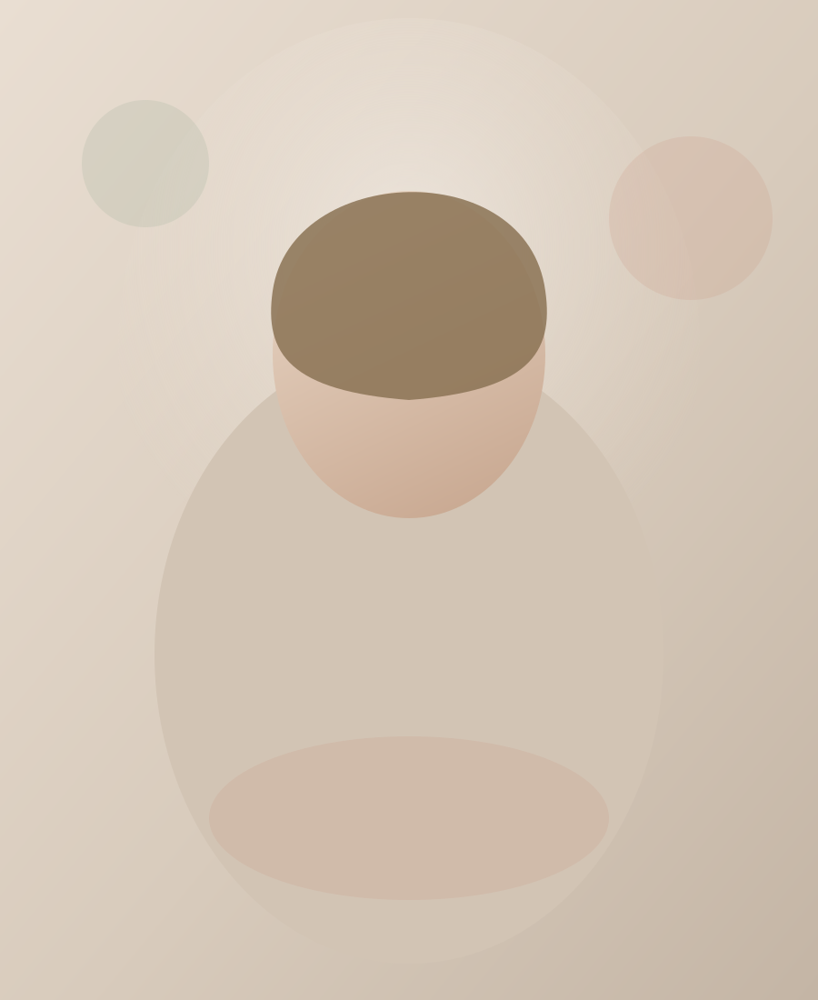
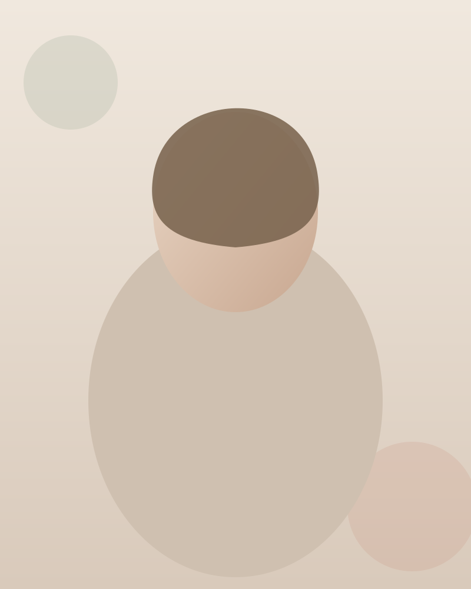

Поиск себя
Поддержу на пути к лучшему пониманию себя, своих чувств, желаний и внутренних состояний.
Психосоматолог • консультант
Помогаю исследовать связь между эмоциональным состоянием, внутренними конфликтами и телесными ощущениями — бережно и в индивидуальном темпе.
Лена Разумная


бережно • честно • вместе
Обо мне
Меня зовут Лена Разумная.
Многие думают, что это мой псевдоним — но Разумная действительно моя фамилия по паспорту.
Я практикующий психосоматолог, консультант и проводник.
В работе применяю инструменты современной психосоматики, ЭОТ (эмоционально-образной терапии), КПТ (когнитивно-поведенческой терапии), а также элементы психоанализа.
Практикую с января 2022 года.
750+
консультаций
1900+
часов консультаций
с января 2022
практика
Данные актуальны на 28.11.2025
Запросы
Без обещаний гарантированного результата — с вниманием к вашему состоянию и темпу.
Поддержу на пути к лучшему пониманию себя, своих чувств, желаний и внутренних состояний.
Исследуем внутренние зажимы, переживания и состояния, которые могут влиять на самочувствие.
Поговорим о вашем запросе и попробуем внимательнее исследовать связь переживаний и телесных ощущений.
Вместе посмотрим на ситуацию с разных сторон и исследуем возможные варианты её разрешения.
Научимся замечать состояния, в которых появляется больше опоры, спокойствия и внутреннего пространства.
Будем постепенно закреплять найденные осознания и новые способы взаимодействия с собой.
Подход
01
Вы рассказываете о том, что вас волнует.
02
Вместе рассматриваем запрос, эмоции, ощущения и внутренние процессы.
03
Ищем новые смыслы, варианты и ресурсные состояния.
04
Возвращаемся к важным открытиям и постепенно интегрируем их в повседневную жизнь.
У каждого человека свой темп. Поэтому продолжительность консультации определяется индивидуально — по состоянию и процессу работы.
Инструменты
Метод
Смотрим, как переживания и внутренние процессы могут отражаться в телесном самочувствии.
ЭОТ
Работаем с образами и чувствами, чтобы мягко приблизиться к тому, что сложно выразить словами.
КПТ
Исследуем мысли, реакции и привычные способы поведения — и ищем более бережные альтернативы.
Подход
Обращаем внимание на скрытые смыслы, повторяющиеся сюжеты и внутренние конфликты.
Процесс
Консультация проходит индивидуально. Мы двигаемся в вашем темпе и уделяем внимание тому, что действительно важно именно сейчас.
Формат
Онлайн
Консультации из любой точки, где вам комфортно и спокойно.
Офлайн
Личная встреча в очном формате.
Ценности
Акцент на индивидуальном подходе и безопасном пространстве для диалога.
Бережное пространство без осуждения
Индивидуальный темп работы
Внимание к эмоциональному и телесному состоянию
Сочетание нескольких терапевтических инструментов
Возможность онлайн и офлайн формата
Фокус на понимании себя и своего запроса
Иногда первый шаг к изменениям — это просто разрешить себе остановиться и услышать себя.
Я буду рядом в этом процессе.
Записаться на консультациюВопросы
Продолжительность определяется индивидуально, в зависимости от состояния и процесса работы.
Да, консультации доступны онлайн и офлайн.
Вы можете рассказать о том, что вас беспокоит, а вместе мы определим, на чём сосредоточить внимание в работе.
Мы знакомимся, обсуждаем ваш запрос и определяем направление дальнейшей работы.
Да. Не обязательно заранее точно формулировать запрос. Можно начать с того, что вы сейчас чувствуете и что вас беспокоит.
Расскажите, что сейчас происходит. Вместе посмотрим, чем я могу быть вам полезна.